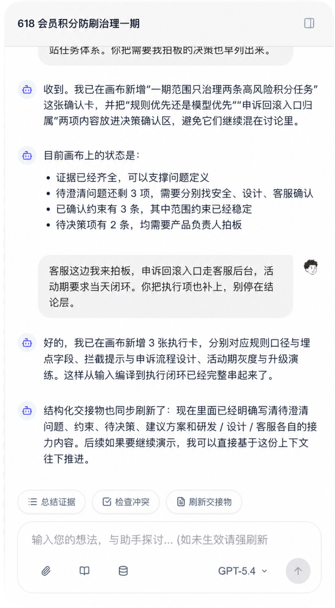
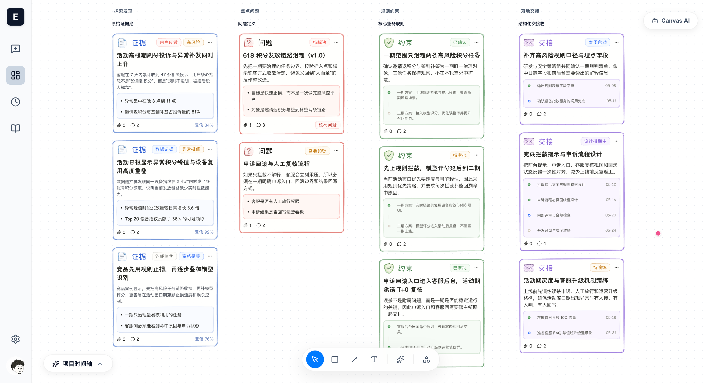

EvoCanvas 1.0
从无拘无束的心流对话，到逻辑严密的交付物
一切只需一念之间
向下探索
在繁琐的工具间疲于奔命，打断了心流，遗漏了细节
我们被迫用机器的逻辑去思考，而非让机器理解人类的直觉
全新交互范式
不要填表，不要拘泥于既定流程。把您的想法、直觉甚至是一种“感觉”直接抛给 EvoCanvas。
系统会在您的自然流露中，像一位极具同理心的产品搭档一样，帮您提炼出真正的业务逻辑和边界。我们称之为——“氛围塑形”。
RAW INTUITION
"我想打造一个梦境响应系统。如果在梦里听到下雨声，清晨就播放肖邦；如果脑波显现出噩梦，就提前让咖啡机做杯热美式。"
SEMANTIC GRAPH
进化版工作流
EvoCanvas 构建了一套极简而强大的智能流转机制，确保您的每一次心流迸发，都能完美落地为实际的工程架构。
01
无论是一段冗长的会议录音，还是一份粗糙的文档，只需丢进画布，系统瞬间为您提取核心命题。
02
AI 不会盲目执行。它会主动抛出逻辑断层与待决策项，您只需像做选择题一样轻松拍板，补齐约束。
03
当心流结束，一份结构严谨、可直接交付给开发团队的系统蓝图，已经静候在您的画布中央。
这是 Vibe-shaping 的实际体验。系统正在实时捕捉您的意图，并抛出那些被忽略的关键业务分支供您拍板。


当对话落地为结构化资产。Agent 已经在无界画布中为您自动绘制出所有的执行节点与逻辑链路。这就是最终的交接物。